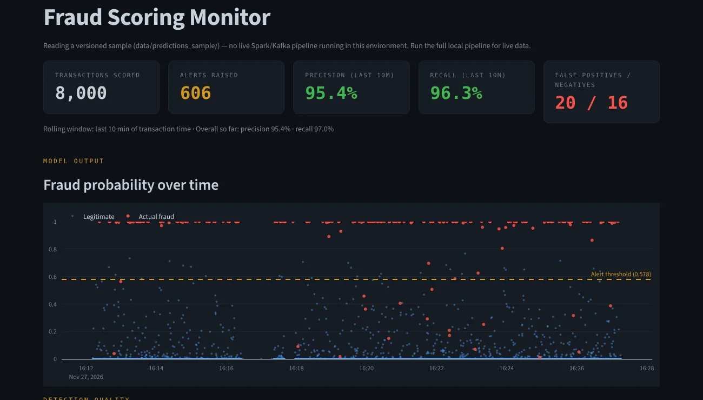

Real-time fraud detection
An XGBoost model scoring a live Kafka stream, with per-card state that survives restarts, exactly-once predictions and a model monitor.
0missing or duplicate predictions after the scoring job is killed mid-stream and restarted, checked in CI

- Decision it supports
- Approve or hold each card transaction the moment it arrives.
- Who uses it
- Fraud prevention and payments risk teams.
- What an error costs
- An approved fraud becomes a loss; a wrong block annoys a legitimate customer.
- How it creates value
- The threshold, chosen on a validation period, keeps false alarms to at most 1 in 20 alerts; on the test period it caught 96.6% of fraud at 96.6% precision. With less fraud in the data the share of false alarms rises; the calculator below shows by how much. The dashboard shows live which kinds of fraud get through, and a monitor raises an alert when quality drops or the data shifts.
- Risks and limits
- Synthetic data; impossible-travel fraud is caught in only 64.2% of cases, and that is documented.
Problem
A monitor that only counts transactions tells a fraud team what already happened. Each transaction needs a score the moment it arrives, and the team must know which kinds of fraud it misses.
Solution
An XGBoost classifier trained offline scores every transaction inside Spark Structured Streaming. Each card's recent history lives in Spark's state store, predictions go to Delta exactly once, and a monitor checks live precision, recall and input drift against written thresholds.
How it works
- The threshold is chosen on a validation period; every reported number comes from a later test period no choice has seen.
- A Spark test restarts the query and gets the same velocity features as training; CI kills the job with SIGKILL and finds one prediction per Kafka message.
- The monitor alerts only when the 95% interval lies below a floor, and flags drift by PSI.
- The model is reused by the SEC MCP agent and the fraud investigation agents.
Results
| 96.6% / 96.6% | precision and recall on the test period (PR-AUC 0.992) |
| 4,597 / 4,597 | Kafka messages and predictions after a SIGKILL restart in CI |
| 64.2% | recall on impossible travel, the documented weak spot |
Limits
Trained on synthetic transactions; impossible travel is partly indistinguishable from real travel.
Stack
XGBoost, Spark Structured Streaming, Delta Lake, Kafka, Streamlit